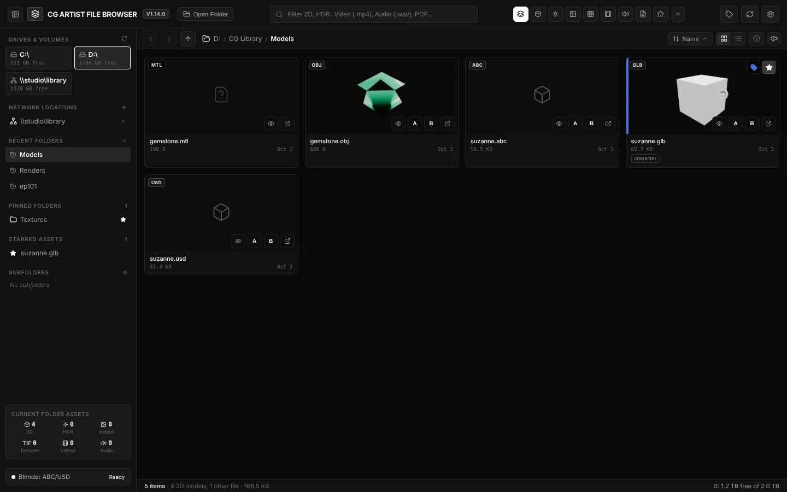
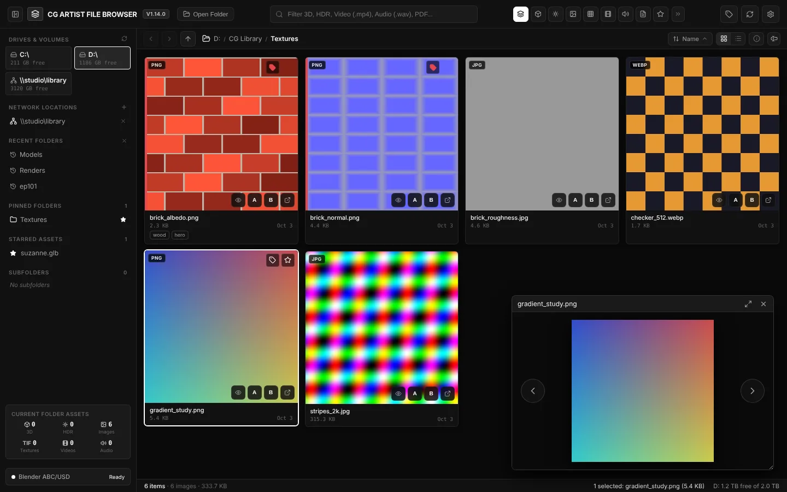
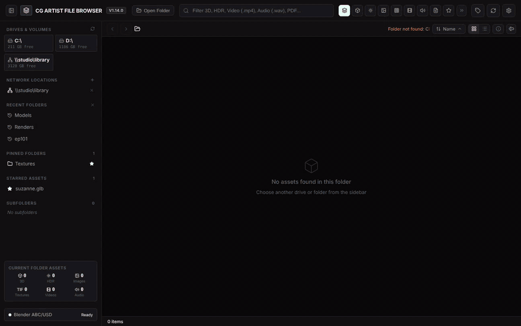
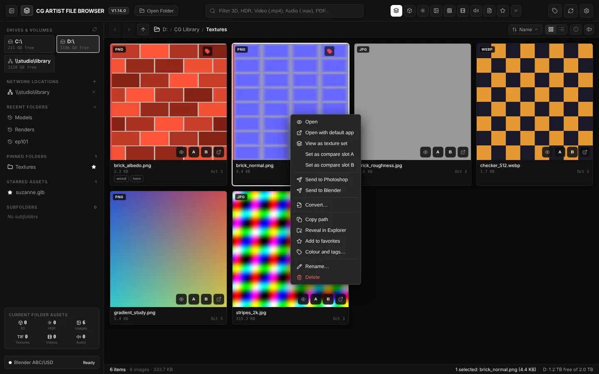
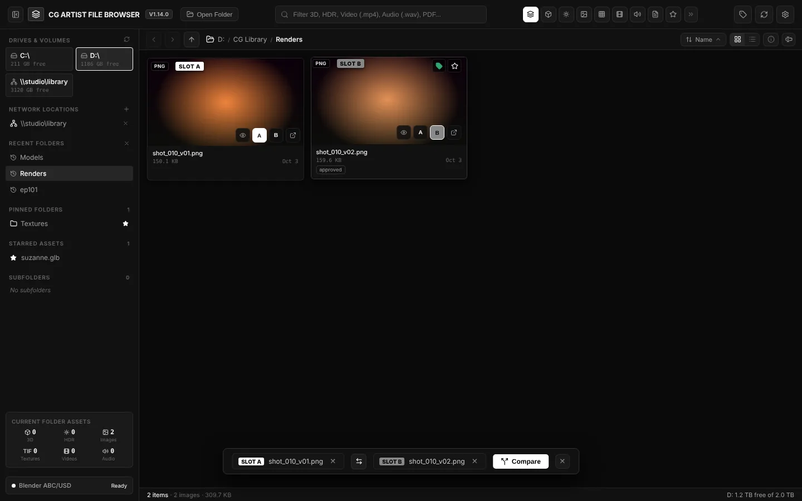
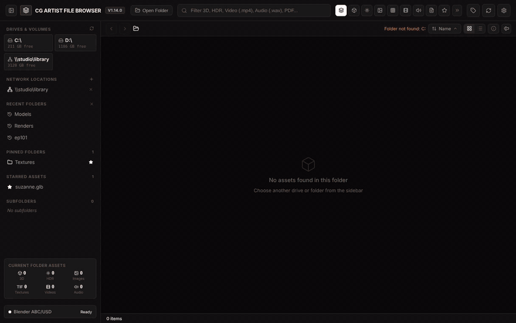

Quick start
A quick tour
The main screen, the four things you do most, and where each one lives. Pictures and clips are included.
The main screen

- Sidebar, left. Drives and network shares, recent folders, pinned folders, and the assets you starred. The box at the bottom counts the files in the current folder.
- Path bar, top. Where you are, with back, forward and up buttons. Click the empty part of the path, or press
Ctrl+L, to type a path. - Filter box, top right. Type to narrow the folder to matching names. The type buttons next to it show only 3D, HDR, images, video, audio, PDF or Markdown files.
- Tiles. Each tile has the shape of its picture, and every row fills the width, like a photo gallery. The slider in the bottom dock, or
Ctrl+ wheel, makes the rows taller or shorter. - Views. Thumbnails by default. The list icon switches to a details list with name, date, type and size. Your choice is remembered.

Preview without opening: Quick Look
Select a file and press Space. A small window opens over the folder and shows the file in its own viewer. Press the arrow keys to move through the folder; the window follows. Space or Esc closes it, Enter opens the full viewer.


Select several files
Click picks one file. Ctrl + Click adds or removes one, Shift + Click selects a range, and dragging on empty space draws a box. Ctrl + A selects everything. The line under the folder name at the top says how many are selected and their total size.

Right-click for actions
Right-click a file or folder for its menu: open, reveal in Explorer, copy the path, rename, delete, send to an app, add it to favourites, label it, convert images, or find duplicates in a folder.

Compare two files
Each card has an A and a B button. Pick two files, then press Compare in the bar at the bottom. Drag the divider to wipe between them, or use the modes in the top bar.


Next steps
- How do I…? answers the common tasks in one line each.
- Keyboard shortcuts lists every key, with a search box.
- When you want the detail behind a screen, the deep dive has a page for each feature.
Found a mistake or something missing? Edit this page on GitHub.